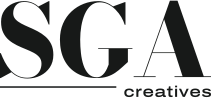
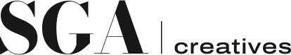

SGA creatives · brandguide v3 · september 2026
Luxury meets urban culture.
Mørkt, fedt og redaktionelt. En fed, geometrisk grotesk og masser af luft møder gadekulturens rigtige mennesker og projekter. Færre ord, flere billeder: billederne bærer udtrykket, og typografien rammer dem ind.
01 · Logo
SGA + creatives
Logoet er typografisk: SGA i Figtree ExtraBold med stram spatiering og creatives mindre i Archivo Expanded. En tynd linje forbinder de to niveauer. Alle logofiler er konverteret til stier og virker uden installerede fonte.



| Fil | Brug |
|---|---|
sga-creatives-logo-light.svg | Primært, stablet logo på mørke flader og billeder (standard). |
sga-creatives-logo-dark.svg | Primært logo på Warm Paper og hvidt. |
sga-creatives-logo-horizontal-*.svg | Header, e-mailsignatur, smalle formater. |
sga-creatives-mark.svg / -512.png | Kompakt mærke: profilbilleder, favicon, app-ikon. |
Frizone: mindst halvdelen af S’ets højde rundt om logoet. Minimum: stablet logo 64 px bredt, vandret logo 110 px bredt, mærket 16 px. Undgå at strække, rotere, farvelægge i Acid Note eller placere logoet på urolige billedområder uden mørk toning.
02 · Mærke og favicon
S.
Mærket er et fedt Figtree-S med et lille Acid Note-punktum på Night. Det står skarpt ved 16 og 32 px.
03 · Farver
Mørkt først, lyst bagefter.
Case-toner. Hver case er sit eget univers med en dyb farve hentet fra billederne:
| Kombination | Kontrast |
|---|---|
| Warm Paper på Night | 16,9 : 1 (AAA) |
| Warm Paper 72 % på Night | 9,0 : 1 (AAA) |
| Warm Paper 72 % på petrol (Lookbook, Timberland) | 7,6 : 1 (AAA) |
| Warm Paper på Nike-rød | 12,1 : 1 (AAA) |
| Ink på Warm Paper | 15,5 : 1 (AAA) |
| Warm Paper 72 % på Nike-rød | 6,7 : 1 (AA) |
Bordeaux/Oxblood fra version 1 er udgået.
04 · Typografi
Fed og geometrisk.
Where brands meet culture.
Figtree, vægt 700 til 800 med stram spatiering (-0,04 em). Bruges til logo, overskrifter og casetitler. Vægtkontrast (700 mod 400) erstatter kursiv, fx "Where brands meet culture."
Label · Archivo Expanded
Brødtekst i Archivo, en neutral og læsbar grotesk. Den brede version bruges i spærrede versaler til labels, knapper og navigation.
Begge fonte er under SIL Open Font License 1.1, som tillader webbrug og selvhosting.
05 · Billeder, layout og bevægelse
Færre ord, flere looks.
- Brug autentiske projektbilleder med mennesker, rum og detaljer. Ingen stockfotos.
- Store billeder i fuld bredde, halve og tredjedele, med smalle mellemrum. Filmrammerne fra Timberland × Rezet er en del af udtrykket.
- Manglende billeder vises som pladsholdere med S-mærket, indtil de nye fotos lægges ind.
- Headeren er gennemsigtig over billederne, har logoet i midten og tynde linjer.
- Ingen rullende tekst. Bevægelse er rolig: en langsom hero-indgang, diskrete reveals og let billedzoom. Alt slås fra ved reduced motion.
06 · Tone of voice
Kort, direkte, kulturelt skarp.
Websitet er på engelsk. Skriv få ord, og beskriv hvad der faktisk skete. Sarahs tidligere projekter præsenteres altid som hendes arbejde med den dokumenterede rolle og arbejdsgiver, aldrig som SGA’s opgaver. Ingen lange tankestreger.